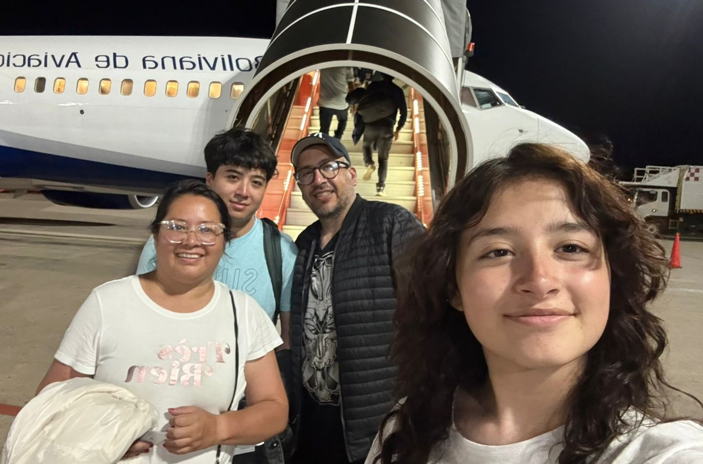

1.Sobre mi
Estudio Diseño Digital en la Universidad Catolica Boliviana San Pablo. Me caracteriza el buen ojo y critica que puedo llegar a tener. Siempre trato de aprender y mejorar en lo que se.
2.Gustos e intereses
- Danza folklorica Boliviana
- Diseño de paginas web
- Jugar videojuegos
- Escuchar musica de todo tipo
3.Inspiracion
Me inspira mi familia

Mi familia es mi mas grande inspiracion, por como me enseñaron a ser. Ellos me apoyaron con la decision de estudiar Diseño Digital y me apoyan en todo lo que hago. Mis padres me muestran valores indispensables y me enseñaron a como salir adelante en todo lo que haga. Mi hermano me enseño a no rendirme y siempre esforzarme hasta donde pueda hacerlo, siempre dar lo mejor de mi.